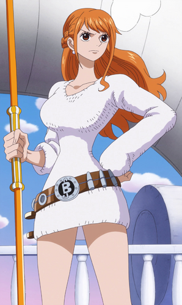
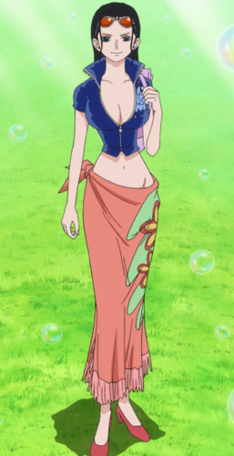

Tripulación de los Sombrero de Paja
Monkey D. Luffy
Rango: Capitán
Recompensa: B$ 1.500.000.000
Monkey D. Luffy, más conocido como Luffy "Sombrero de Paja", es el protagonista principal de la serie de manga y anime One Piece. Comió una fruta del diablo de tipo paramecia llamada fruta Gomu Gomu, que le convirtió en un hombre de goma. Además de esto, posee varias habilidades que le hacen ser un pirata más que especial; un gran ejemplo de ello es la capacidad de usar el haoshoku haki ―que sólo lo posee una persona dentro de un millón― y poseer también los otros dos tipos de haki.
Roronoa Zoro
Rango: Vice Capitán
Recompensa: B$ 320.000.000
Roronoa Zoro, conocido como El Cazador de Piratas, es el vicecapitán de los Piratas de Sombrero de Paja, y uno de sus dos espadachines, así como un antiguo cazarrecompensas. Fue el primer miembro en unirse a la tripulación, y es considerado parte del Trío Monstruoso junto a Luffy y Sanji. Su sueño es convertirse en el mejor espadachín del mundo. Zoro también es considerado uno de los Once Supernovas que forman parte de «la peor generación», ya que llegó al Archipiélago Sabaody con $B 120.000.000 de recompensa.
Nami
Rango: Navegante
Recompensa: B$ 66.000.000
Nami, apodada Gata Ladrona, es una pirata y la navegante de los Piratas del Sombrero de Paja, así como una de las protagonistas principales de la serie. Es el tercer miembro de la tripulación y la segunda en unirse, haciéndolo oficialmente durante el arco de Arlong Park. Ella era anteriormente un miembro de los Piratas de Arlong e inicialmente se unió a los de Sombrero de Paja con el fin de robarles, pero se unió oficialmente tras rebelarse contra Arlong y su posterior derrota a manos de Luffy.
Usopp
Rango: Francotirador
Recompensa: B$ 200.000.000
Usopp es el francotirador de los Piratas de Sombrero de Paja. Es el cuarto miembro de la tripulación y el tercero en unirse oficialmente. A pesar de abandonar la banda en el arco de Water 7, se volvió a unir en el arco del regreso a Water 7. Es proveniente de la villa Syrup en el East Blue. Ahí ejerció como capitán de los Piratas de Usopp, pero tras los eventos del arco de Villa Syrup, se unió a los Sombrero de Paja. Su sueño es convertirse en un valiente guerrero de los mares como su padre.
Vinsmoke Sanji
Rango: Cocinero
Recompensa: B$ 330.000.000
Sanji, conocido como Pierna Negra y nacido como Vinsmoke Sanji, es el cocinero de los Piratas de Sombrero de Paja, el tercer hijo de la familia Vinsmoke y uno de los protagonistas principales del manga y anime de One Piece. Es el quinto miembro de la tripulación, y el cuarto en unirse. Al haber nacido en el North Blue, fue el primer tripulante en no ser originario del East Blue. Forma parte del «Trío Monstruoso» junto a Luffy y Roronoa Zoro; y, como tal, es uno de los combatientes más fuertes de la tripulación. Su sueño es encontrar el mar legendario conocido como All Blue, el cual, según la leyenda, es el único hábitat marino del mundo donde coinciden todas las especies de peces que existen, confluyendo además otros seres marinos procedentes de los cinco mares. Tras los incidentes en los territorios de la emperatriz pirata Big Mom su recompensa ascendió hasta los $B 330.000.000 siendo así la tercera mas alta de los de Sombrero de paja, superada solo por el timonel Jinbe y el capitán Luffy.
Tony Tony Chopper
Rango: Doctor
Recompensa: B$ 100
Tony Tony Chopper es el médico de los Piratas de Sombrero de Paja. Es un reno que comió la fruta Hito Hito de la isla de Drum. las habilidades de su fruta del diablo le permiten cambiar de apariencia dependiendo de la situación. El cuerno izquierdo de Chopper tiene una placa metálica alrededor porque se lo rompió en una pelea cuando era más joven, y Hiriluk se lo trató. Chopper tiene un rasgo destacable que ningún otro reno tiene: su nariz azul. Él es el sexto miembro de la tripulación y el quinto en unirse a ella.
Nico Robin
Rango: Arqueóloga
Recompensa: B$ 130.000.000
Nico Robin, también conocida por sus epítetos: Niña Demonio y La Luz de la Revolución es la arqueóloga de los Piratas de Sombrero de Paja. Es el séptimo miembro de la tripulación y el sexto en unirse, haciéndolo al final del arco de Arabasta. Dejó temporalmente a la tripulación durante el arco de Water 7, pero se reincorporó durante el arco de Enies Lobby. Su sueño es conocer la verdadera historia investigando en los poneglyphs. Es la única superviviente del Clan de Ohara, sucediendo a todos sus predecesores como arqueóloga, y fue la mano derecha del jefe de la organización criminal Baroque Works bajo el alias de Miss All Sunday.
Franky
Rango: Carpintero
Recompensa: B$ 94.000.000
Franky cuyo verdadero nombre es Cutty Flam, es un cyborg (mitad androide, mitad humano) quien era el líder de la Familia Franky, un grupo de desmanteladores de Water 7 que hacen a la vez el trabajo de cazadores de recompensas. Tras los eventos de Dressrosa cuenta con una recompensa de $B 94.000.000. Es el octavo miembro de la tripulación de Luffy, tomando el puesto de carpintero. Franky nació en el South Blue. Su sueño es construir una nave que sea capaz de viajar por todo el mundo.
Brook
Rango: Músico
Recompensa: B$ 83.000.000
Brook es el músico de los Piratas de Sombrero de Paja, y uno de sus dos espadachines. Es un esqueleto viviente que encontraron en un barco fantasma solo, porque habían envenenado a toda su anterior tripulación. Es el consumidor de una fruta del diablo, más concretamente la fruta Yomi Yomi, y ahora es un no-muerto traído de vuelta al mundo de los vivos como un pseudo-inmortal, debido a sus poderes. Es el noveno miembro de la banda y el octavo en aceptar unirse a la banda de Luffy, quien llevaba esperando ansiosamente un músico en su tripulación desde el comienzo de su aventura.
Jimbe
Rango: Timonel
Recompensa: B$ 438.000.000
Jinbe el Caballero del Mar es el timonel de los Piratas de Sombrero de Paja, siendo el décimo miembro de la banda y el noveno en unirse. Es un gyojin tiburón ballena, que sirvió como antiguo capitán de los Piratas del Sol y como miembro de los Siete Guerreros del Mar. Fue prisionero en la cárcel de Impel Down donde se cruzó con el capitán Monkey D. Luffy cuando aun no pertenecia a la tripulación.
Going Merry

Rango: Barco
El Going Merry, fue el primer barco de los Piratas de Sombrero de Paja. Se trata de una nave de clase carabela diseñada por Merry, financiado y regalado por Kaya a los Sombreros de Paja como recompensa por haberla salvado. Con el tiempo, el barco llegó a ser muy querido por la tripulación como una casa y como un amigo, tanto es así que literalmente tomó vida propia y se convirtió en una parte tan importante de la tripulación como cualquiera de ellos. Por desgracia, el Going Merry recibió una enorme cantidad de daño durante su "vida como miembro de la banda", perdiendo varios trozos de madera, golpeado, quemado en la saga de Skypiea e incluso se le ha roto el mástil principal repetidas veces. Finalmente, el Going Merry ya no pudo continuar más y recibió un funeral vikingo después del arco de Enies Lobby.
Thousand Sunny
Rango: Barco
El Thousand Sunny es el segundo barco de los Piratas de Sombrero de Paja y, en la actualidad, su principal medio de transporte después de que el Going Merry quedase inutilizado. Se trata de un buque tipo Corbeta que fue creado con los diseños, la destreza y el trabajo de Franky. Construido a partir de madera procedente del Árbol del Tesoro Adam, el Thousand Sunny es una nave magnífica, y por lo menos el doble de grande de lo que era el Going Merry. Sus características incluyen diversas solicitudes de los miembros de los Piratas de Sombrero de Paja, que ya tenían en mente antes de llegar a Water 7; y mucho más de lo que imaginaron.